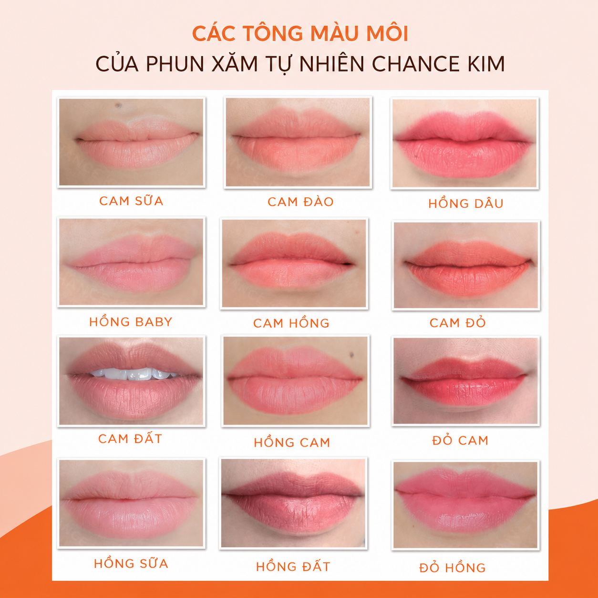

Phun Môi Màu Nào Đẹp? Top 15 Màu Phun Môi Đẹp Nhất Theo Từng Tông Da Và Độ Tuổi
Một đôi môi đẹp không chỉ phụ thuộc vào kỹ thuật phun mà còn nằm ở việc lựa chọn màu sắc phù hợp. Cùng một màu môi nhưng trên mỗi người lại cho hiệu ứng khác nhau vì còn phụ thuộc vào nền môi, màu da, độ tuổi và phong cách cá nhân.
Nhiều khách hàng khi đến ELLY PMU thường đặt câu hỏi: “Em nên phun màu nào để vừa đẹp vừa tự nhiên?” hoặc “Da ngăm có nên chọn màu hồng đào không?”. Thực tế, không có một màu môi đẹp nhất cho tất cả mọi người. Điều quan trọng là chọn đúng màu phù hợp với chính bạn.
Trong bài viết này, ELLY PMU sẽ tổng hợp những màu phun môi được yêu thích nhất hiện nay và hướng dẫn cách lựa chọn theo từng tông da.
Vì Sao Việc Chọn Màu Môi Lại Quan Trọng?
Màu môi ảnh hưởng trực tiếp đến tổng thể gương mặt. Một màu môi phù hợp có thể làm da trông sáng hơn, gương mặt tươi tắn hơn, giúp tiết kiệm thời gian trang điểm và tạo vẻ ngoài trẻ trung, tự nhiên.
Ngược lại, nếu chọn màu không phù hợp, đôi môi có thể trở nên nhợt nhạt hoặc quá nổi bật so với khuôn mặt.
Những Yếu Tố Cần Xem Trước Khi Chọn Màu
- Màu da.
- Nền môi hiện tại.
- Mức độ thâm môi.
- Độ tuổi.
- Phong cách cá nhân.
- Nhu cầu sử dụng hằng ngày.
Đây là những yếu tố giúp kỹ thuật viên lựa chọn màu môi hài hòa hơn, thay vì chỉ chọn theo xu hướng.

Top 15 Màu Phun Môi Đẹp Được Yêu Thích Nhất
- Hồng đào: nhẹ nhàng, trẻ trung, phù hợp da sáng và phong cách Hàn Quốc. Thường hợp nhóm 20-35 tuổi.
- Cam đào: tươi tắn, dễ phối trang điểm, không quá nổi bật. Hợp da sáng và da trung bình.
- Đỏ nâu: sang trọng, trưởng thành, không lỗi thời. Phù hợp khách từ 25 tuổi trở lên.
- Hồng đất: thanh lịch, tự nhiên, dễ để mặt mộc.
- Đỏ cam: năng động, rạng rỡ, giúp gương mặt có sức sống hơn.
- Đỏ ruby: nổi bật, phù hợp người thích phong cách quyến rũ.
- Nude hồng: hợp kiểu trang điểm Tây hoặc makeup chuyên nghiệp.
- Hồng baby: dịu dàng, nữ tính, được nhiều bạn trẻ yêu thích.
- Cam san hô: giúp gương mặt tươi sáng hơn.
- Hồng cam: kết hợp giữa hồng và cam, mang lại vẻ trẻ trung.
- Đỏ rượu: sang trọng, cá tính và nổi bật.
- Đỏ gạch: được nhiều khách hàng văn phòng lựa chọn.
- Cam cháy: hiện đại và thời trang.
- Hồng coral: mềm mại, nữ tính.
- Đỏ cherry: tươi trẻ, nổi bật và dễ tạo điểm nhấn.
Chọn Màu Theo Tông Da
Da Trắng
Có thể phù hợp với nhiều màu như hồng đào, cam đào, hồng baby, đỏ cam và đỏ ruby.
Da Trung Bình
Nên cân nhắc hồng đất, đỏ nâu, cam đào và đỏ cam. Những màu này giúp gương mặt hài hòa mà vẫn tươi tắn.
Da Ngăm
Thường phù hợp với đỏ nâu, đỏ gạch, hồng đất và đỏ rượu. Việc lựa chọn cụ thể nên dựa trên nền môi thực tế.
Chọn Theo Độ Tuổi
18-25 tuổi
Ưu tiên hồng đào, hồng baby và cam đào.
25-35 tuổi
Ưu tiên đỏ nâu, hồng đất và đỏ cam.
Trên 35 tuổi
Ưu tiên đỏ nâu, đỏ gạch và hồng đất để tạo vẻ thanh lịch, trưởng thành.
Môi Thâm Nên Chọn Màu Gì?
Nếu môi có sắc tố thâm, kỹ thuật viên sẽ đánh giá mức độ và tư vấn phương án phù hợp. Một số gam màu thường được cân nhắc gồm đỏ nâu, hồng đất và đỏ gạch.
Trong một số trường hợp, có thể cần xử lý nền môi trước khi phun màu để màu lên đều và tự nhiên hơn.
Những Sai Lầm Khi Chọn Màu
- Chọn theo người nổi tiếng.
- Chọn theo xu hướng TikTok.
- Chọn theo bạn bè.
- Không quan tâm đến nền môi thật.
Điều này có thể khiến kết quả không đạt như mong muốn, dù màu đó rất đẹp trên người khác.
ELLY PMU Tư Vấn Màu Môi Như Thế Nào?
Tại ELLY PMU, trước khi thực hiện, khách hàng sẽ được kiểm tra nền môi, phân tích màu da, tư vấn theo độ tuổi, gợi ý nhiều màu phù hợp và giải thích ưu nhược điểm của từng màu.
Chỉ khi khách hàng hài lòng với lựa chọn, kỹ thuật viên mới bắt đầu thực hiện.
Checklist Chọn Màu Môi
Xác định đúng màu da.
Đánh giá nền môi.
Không chạy theo xu hướng.
Ưu tiên màu phù hợp với công việc và phong cách.
Lắng nghe tư vấn từ kỹ thuật viên.
Câu Hỏi Thường Gặp
Da ngăm nên phun màu gì?
Đỏ nâu, hồng đất hoặc đỏ gạch thường là những lựa chọn được cân nhắc nhiều. Tuy nhiên, màu phù hợp còn phụ thuộc vào nền môi và sở thích cá nhân.
Màu nào tự nhiên nhất?
Hồng đào, cam đào và hồng đất thường mang lại hiệu ứng tự nhiên trên nhiều khách hàng.
Có thể đổi màu khi dặm lại không?
Trong nhiều trường hợp có thể, nhưng kỹ thuật viên sẽ cần đánh giá màu môi hiện tại trước khi tư vấn.
Kết Luận
Không có một màu môi đẹp nhất dành cho tất cả mọi người. Màu môi phù hợp là màu hài hòa với làn da, nền môi và phong cách của chính bạn. Đừng chỉ chọn theo xu hướng, hãy để kỹ thuật viên đánh giá và tư vấn trước khi thực hiện.